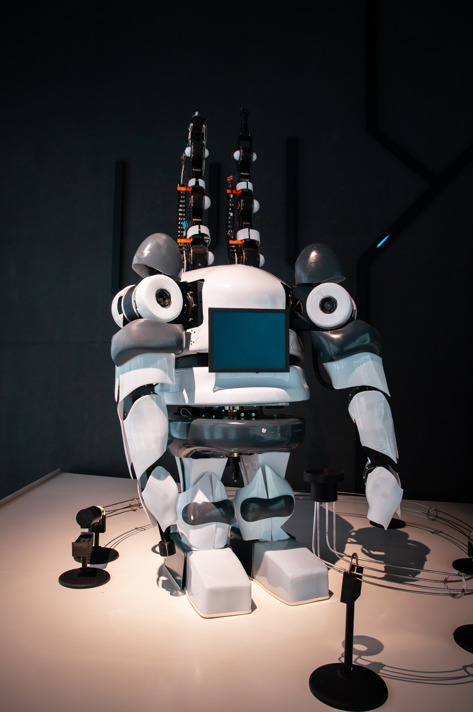
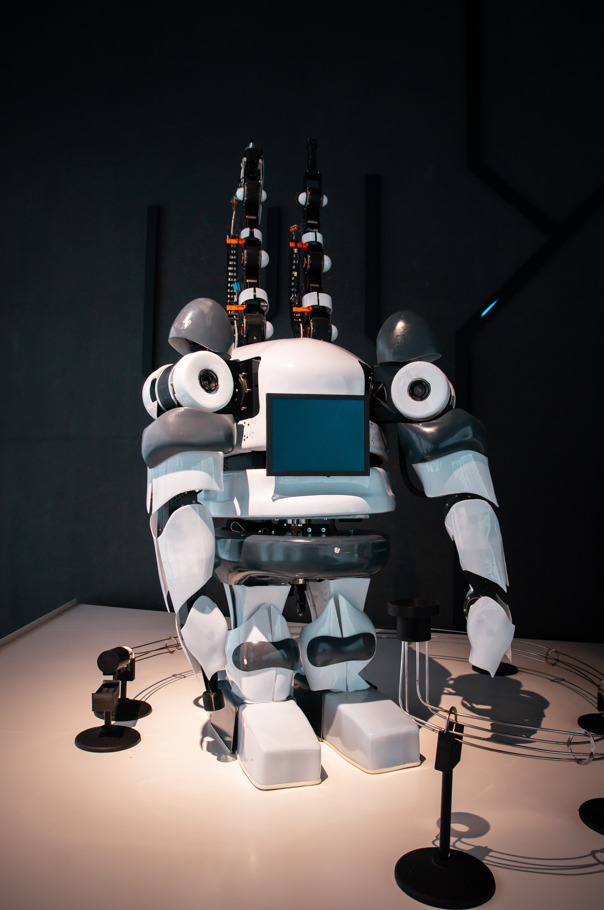

Conceptos de robótica
1¿Qué es la Robótica?
La robótica es una disciplina que se ocupa del diseño, operación, manufacturación, estudio y aplicación de autómatas o robots. Para ello, combina la ingeniería mecánica, ingeniería eléctrica, ingeniería electrónica, ingeniería biomédica y las ciencias de la computación, así como otras disciplinas.
2Tipos de robots
Primera generación. Robots multifuncionales con un sistema simple de control, manual, de secuencia fija o secuencia variable. Segunda generación. Robots de aprendizaje, que repiten secuencias de movimientos previamente ejecutadas por operadores humanos. Tercera generación. Robots de control sensorizado, controlados por algún tipo de programa (software) que envía las señales al cuerpo robotizado para llevar a cabo determinadas tareas mecánicas.
3Clasificación de un robot
Poliarticulados. Tienen muchas piezas móviles. Móviles. Son de tipo rodante o automotor. Zoomórficos. Imitan la forma de algunos animales. Antropomórficos. Imitan la forma del ser humano.
Galeria


 



Logotipos :
Analytics